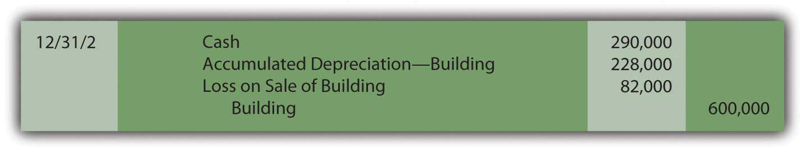

At the end of this section, students should be able to meet the following objectives:
Question: Property and equipment are occasionally sold before the end of their estimated lives. A company’s operational needs might change or officials could want the benefit of a newer or more efficient model. What accounting is necessary in the event that a piece of property or equipment is sold prior to the conclusion of its useful life? In the above example, assume that after the adjusting entry for depreciation is made on December 31, Year Two, the building is sold for $290,000 cash. How is that transaction recorded?
Answer: Accounting for the disposal of property and equipment is relatively straightforward.
First, to establish account balances that are appropriate at the date of sale, depreciation is recorded for the period of use during the current year. In this way, the expense is matched with any revenues earned in the current period.
Second, the amount received from the sale is recorded while the book value of the asset (both its cost and accumulated depreciation) is removed. If the owner receives less for the asset than this book value, a loss is recognized for the difference, which decreases reported net income. If more is received than book value, the excess is recorded as a gain so that net income increases.
Because the above building is sold for $290,000 on December 31, Year Two, when the book value is $372,000 (cost of $600,000 less accumulated depreciation of $228,000), a loss of $82,000 is reported by the seller ($372,000 book value less $290,000 proceeds). The following entry is recorded after the depreciation adjustment for the period is made.
Figure 10.3 Sale of Building at a Loss
Conversely, if this building is sold on that date for $440,000 rather than $290,000, the company receives $68,000 more than book value ($440,000 less $372,000) so that a gain of that amount is recognized.
Figure 10.4 Sale of Building at a Gain
Although gains and losses appear on the income statement, they are often shown separately from revenues and expenses. In that way, a decision maker can determine both the income derived from primary operations (revenues less expenses) and the amount that resulted from tangential activities such as the sale of a building or other property (gains less losses).
Link to multiple-choice question for practice purposes: http://www.quia.com/quiz/2092937.html
Question: In the reporting above, the building was bought on January 1 and sold on December 31 so that depreciation was always determined and recorded for a full year. What amount of depreciation is appropriate if property or equipment is held for less than twelve months during a year? Virtually all such assets are bought or sold during the year so that a partial year is appropriate.
Answer: The recording of depreciation follows the matching principle. If an asset is owned for less than a full year, it does not help generate revenues for all twelve months. The amount of expense should be reduced accordingly. For example, if the above building is purchased on April 1, Year One, depreciation expense of only $85,500 (9/12 of the full-year amount of $114,000) is recognized on December 31, Year One. Similarly, if an asset is sold on a day other than December 31, less than a full year’s depreciation is assigned to the year of sale. Once again, revenue is not generated for the entire period; depreciation expense must also be recognized proportionally.
To illustrate, assume the above building was purchased on April 1 of Year One for $600,000 and then sold for $350,000 on September 1 of Year Three. As calculated above, depreciation for Year One is $85,500. Depreciation for the final eight months that it was used in Year Three is $76,000 (8/12 of $114,000). The following journal entries reduce the asset’s book value to $324,500 (cost of $600,000 less accumulated depreciation of $275,500). Cash of $350,000 is collected from the sale. Thus, a gain of $25,500 is recognized ($350,000 less $324,500).
Figure 10.5 Acquisition, Depreciation, and Sale of Building
Question: Monitoring the specific days on which depreciable assets are bought and sold seems like a tedious process. Do companies use a simpler method for assigning depreciation when a piece of property or equipment is held for less than a full year?
Answer: Most companies hold many depreciable assets, often thousands. Depreciation is nothing more than a mechanical cost allocation process. It is not an attempt to mirror current value. Consequently, company officials often prefer not to invest the time and effort needed to keep track of the specific number of days or weeks of an asset’s use during the years of purchase and sale. As a result, depreciation is often calculated to the nearest month when one of these transactions is made. A full month of expense is recorded if an asset is held for fifteen days or more whereas no depreciation is recognized in a month where usage is less than fifteen days. No genuine informational value comes from monitoring the depreciation of assets down to days, hours, and minutes. An automobile acquired on March 19, for example, is depreciated as if bought on April 1. A computer sold on November 11 is assumed to have been used until October 31.
As another accepted alternative, many companies apply the half-year conventionMethod of calculating depreciation for depreciable assets that are held for any period less than a year by automatically taking one-half of year of depreciation; it makes the maintenance of exact records unnecessary. (or some variation). When property or equipment is owned for any period less than a full year, a half year of depreciation is automatically assumed. Maintenance of exact records is not necessary. Long-lived assets are typically bought and sold at various times throughout each period so that, on the average, one-half year is a reasonable assumption. As long as such approaches are applied consistently, reported figures are viewed as fairly presented. Property and equipment bought on February 3 or sold on November 27 is depreciated for exactly one-half year in both situations.
Link to multiple-choice question for practice purposes: http://www.quia.com/quiz/2092938.html
Depreciation expense is recorded for property and equipment at the end of each fiscal year and also at the time of an asset’s disposal. To record a disposal, cost and accumulated depreciation are removed. Any proceeds are recorded and the difference between the amount received and the book value is recognized as a gain (if more than book value is collected) or a loss (if less is collected). Many companies automatically record depreciation for one-half year for any period of less than a full year. The process is much simpler and, as a mechanical allocation process, no need for absolute precision is warranted.